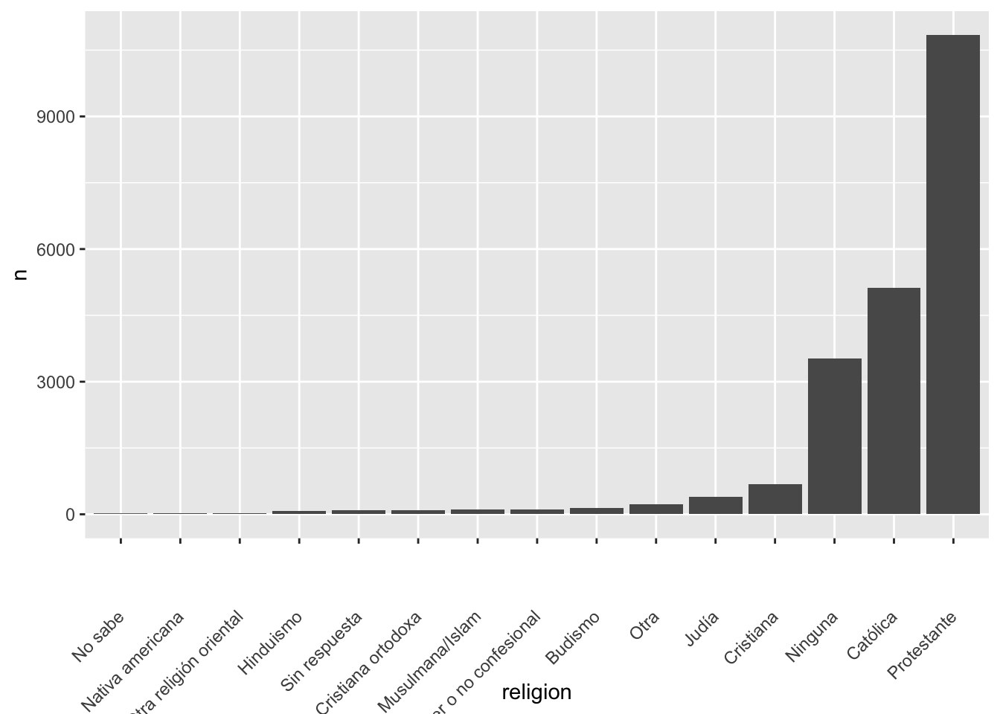
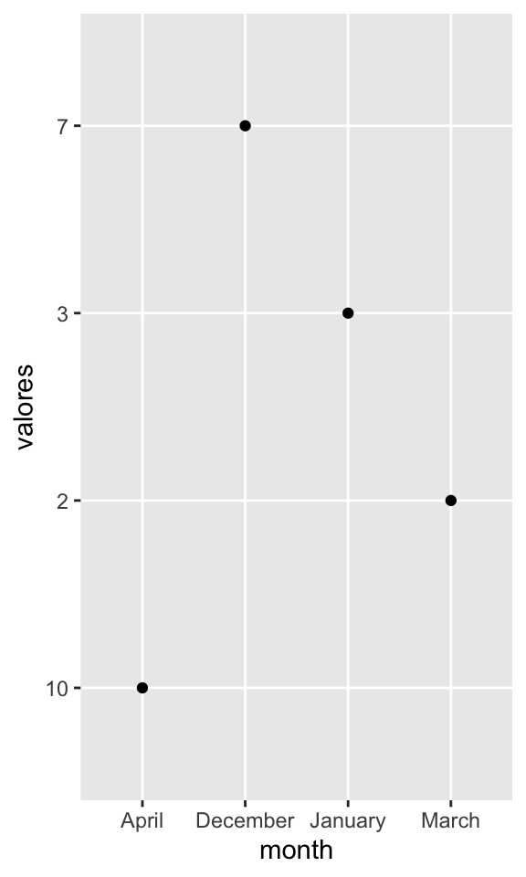

Chapter 13 Factores
Fecha de la ultima revisión
## [1] "2024-08-19"El tema proviene de los siguientes sitios. Aunque los ejemplos son distinctos
English: https://r4ds.had.co.nz/factors.html
Español: https://es.r4ds.hadley.nz/15-factors.html
## [1] "December" "January" "March" "April"## chr [1:4] "December" "January" "March" "April"## int [1:4] 1 2 3 4Unir las dos listas
## month valores x
## 1 December 7 1
## 2 January 3 2
## 3 March 2 3
## 4 April 10 413.1 ¿Qué ocurrio en el gráfico?

Order months in correct order
use month.name
Hay variables ya descrita en R, para facilitar el uso de constantes
- LETTERS: Mayuscula
- letters: minuscula
- month.abb: abreviación de meses en Ingles
- month.name: nombre de meses en Ingles
- pi = el valor de pi
See this website for more details
https://datacornering.com/how-to-get-the-month-name-from-the-number-in-r/
## [1] "A" "B" "C" "D" "E" "F" "G" "H" "I" "J" "K" "L" "M" "N" "O" "P" "Q" "R" "S"
## [20] "T" "U" "V" "W" "X" "Y" "Z"## [1] "a" "b" "c" "d" "e" "f" "g" "h" "i" "j" "k" "l" "m" "n" "o" "p" "q" "r" "s"
## [20] "t" "u" "v" "w" "x" "y" "z"## [1] "Jan" "Feb" "Mar" "Apr" "May" "Jun" "Jul" "Aug" "Sep" "Oct" "Nov" "Dec"## [1] "January" "February" "March" "April" "May" "June"
## [7] "July" "August" "September" "October" "November" "December"## [1] 3.141593Code

Code
## [1] TRUECode

13.1.1 Usando la funciones factor y levels, estamos asignando los factores a un nivel específico en el orden de la lista
13.1.2 parse_factor() is similar a factor(), but generates a warning if levels have been specified and some elements of x are not found in those levels.
Code
## [1] Dic Ene Mar <NA>
## Levels: Ene Mar Dic## Warning: 1 parsing failure.
## row col expected actual
## 4 -- value in level set Dii## [1] Dic Ene Mar <NA>
## attr(,"problems")
## # A tibble: 1 × 4
## row col expected actual
## <int> <int> <chr> <chr>
## 1 4 NA value in level set Dii
## Levels: Ene Mar DicSi quiere que los valores aparezca en el orden que aparecen en la base de datos use unique(variable)
Code
## Nombre_est Nota_Final
## 1 Monica 99
## 2 Isabela 27
## 3 Juan 89
## 4 Robo 91
## 5 Pepito 27
Code

## [1] Dic Ene Mar Dii
## Levels: Dic Ene Mar Dii## [1] "Dic" "Ene" "Mar" "Dii"13.3 A smaller figure to the right, with floating text

LOTS of text here to wrap around the figure. dfghjlkjhgdgxchvbvcxcvbnnbvvbvbbvcvxcv. fgffhgcvbcvbhbvvbvcvbnv bcbnbbnmmbnmnb vbcbnbvvnbbb vbb v b b cgjhkggbcv
13.4 Haga un re-order por la cantidad de personas por religion
Code

Hacer los ejercicios en la sección 15.3.1 del libro en español
13.5 Modificar el orden de los factores
- fct_reorder()
- !is.na( ) remover los “NA”
- fct_infreq()
- fct_rev()
- fct_recode()
- fct_collapse()
- fct_lump()
Code
## # A tibble: 15 × 5
## religion edad horas_tv sd_edad n
## <fct> <dbl> <dbl> <dbl> <int>
## 1 Sin respuesta 49.5 2.72 2.72 93
## 2 No sabe 35.9 4.62 4.62 15
## 3 Inter o no confesional 40.0 2.87 2.87 109
## 4 Nativa americana 38.9 3.46 3.46 23
## 5 Cristiana 40.1 2.79 2.79 689
## 6 Cristiana ortodoxa 50.4 2.42 2.42 95
## 7 Musulmana/Islam 37.6 2.44 2.44 104
## 8 Otra religión oriental 45.9 1.67 1.67 32
## 9 Hinduismo 37.7 1.89 1.89 71
## 10 Budismo 44.7 2.38 2.38 147
## 11 Otra 41.0 2.73 2.73 224
## 12 Ninguna 41.2 2.71 2.71 3523
## 13 Judía 52.4 2.52 2.52 388
## 14 Católica 46.9 2.96 2.96 5124
## 15 Protestante 49.9 3.15 3.15 10846
## [1] 013.5.1 Nota el efecto de añadir un “-” antes de edad

Code

Reorder factor levels by sorting along another variable Description fct_reorder() is useful for 1d displays where the factor is mapped to position; fct_reorder2() for 2d displays where the factor is mapped to a non-position aesthetic. last2() and first2() are helpers for fct_reorder2(); last2() finds the last value of y when sorted by x; first2() finds the first value.
Code
## # A tibble: 16 × 4
## ingreso edad horas_tv n
## <fct> <dbl> <dbl> <int>
## 1 Sin respuesta 45.5 2.90 183
## 2 No sabe 45.6 3.41 267
## 3 Se niega a responder 47.6 2.48 975
## 4 25000 o más 44.2 2.23 7363
## 5 20000 - 24999 41.5 2.78 1283
## 6 15000 - 19999 40.0 2.91 1048
## 7 10000 - 14999 41.1 3.02 1168
## 8 8000 - 9999 41.1 3.15 340
## 9 7000 - 7999 38.2 2.65 188
## 10 6000 - 6999 40.3 3.17 215
## 11 5000 - 5999 37.8 3.16 227
## 12 4000 - 4999 38.9 3.15 226
## 13 3000 - 3999 37.8 3.31 276
## 14 1000 - 2999 34.5 3.00 395
## 15 Menos de 1000 40.5 3.36 286
## 16 No aplica 56.1 3.79 7043
Reorder factor levels by hand Description This is a generalisation of stats::relevel() that allows you to move any number of levels to any location.

- Ejercicios:
Hacer los ejercicios en la sección 15.5.1 del libro en español